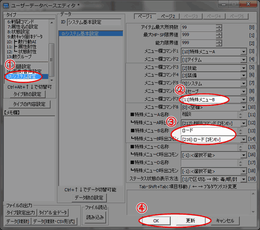

ユーザーデータベースウィンドウを開きます。
①ウィンドウが開いた直後は「タイプ」が「技能」になっています。
「17:システム設定」をクリックして下さい。
②「ページ１」の項目「メニュー欄コマンド」1～8のうち
空欄に「[11]特殊メニューB」を入力します。
もしすでに特殊メニューBを使用している場合は、
別の特殊メニュー(A,C,Dのどれか未使用のもの)にしてください。
③下の項目「特殊メニューB名称」に「ロード」、
「┗特殊メニューB呼出コモン」に「ロード[ｺﾓﾝEv]」を指定してください。
(②でB以外の特殊メニューを使うことにした場合、
その特殊メニューのところへ設定してください。)
④更新ボタンかＯＫボタンを押して下さい。
これで、「ロード」がメニューに追加されました。
